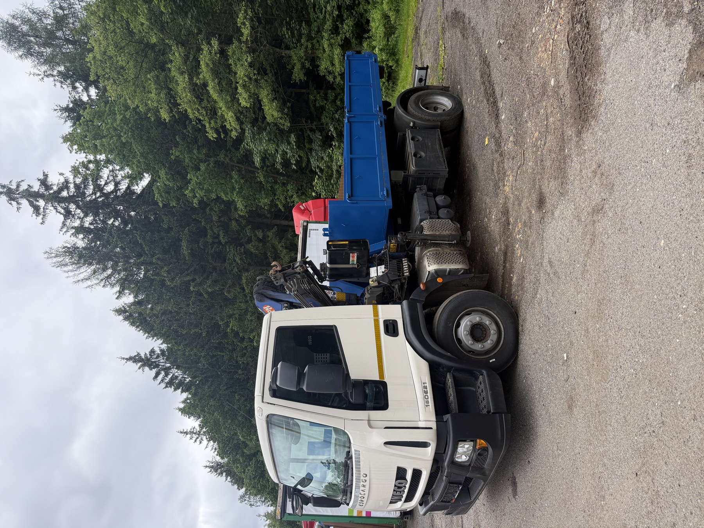

O nás
Lokální kontejnerová doprava pro okolí Unhoště, Prahu a Středočeský kraj
Kontejnerovka.cz je přímá kontejnerová doprava pro lidi a firmy, kteří chtějí mluvit rovnou s provozovatelem. Jezdím vlastním autem s rukou, které uveze až 8 t nákladu. Nejbližší oblast je Svárov u Unhoště, Kladensko, Rudná, Hostivice a Praha-západ.
Stručně
Kdo provozuje Kontejnerovka.cz
Kontejnerovka.cz provozuje Matyáš Mašín, IČO 01379178, DIČ CZ9211070033, plátce DPH. Ať víte, komu voláte: jméno, IČO, adresa i Google profil jsou tady na jednom místě.
- Telefon: 738 505 028, e-mail: info@kontejnerovka.cz
- Adresa: Holýšovská 2923/4, Stodůlky, 155 00 Praha 5
- Lokální zaměření: Praha, Praha-západ, Unhošť, Svárov, Nučice, Rudná, Kladno a Hostivice
Jak služba působí v praxi
Nejdůležitější není hezký text, ale jasná domluva před příjezdem
U kontejneru zákazník potřebuje vědět, kdo přijede, co smí být v odpadu, kde může auto stát a co se stane, když se ukáže jiný materiál než v poptávce.

Moje autoNa zakázku přijíždí moje vlastní Iveco s rukou, ne cizí technika z burzy.
Ulice, dvůr, stavba i horší vjezd se musí potvrdit předem, stejně jako typ a váha nákladu.

Ruka v akciFotka ukazuje, že manipulaci řeším vlastním autem a skutečnou rukou.
Není to jen dopravní dispečink. Přístup, složení a bezpečné místo pro auto řeším přímo podle reality na místě.

KontejnerNa webu je i reálný kontejner v provozu, ne jen obecné řeči o službě.
To je důležité hlavně pro představu, jak vypadá přistavení, odvoz a sklápění na místě.
Co řeším nejčastěji
Přistavení kontejneru na rekonstrukce, odvoz suti, zeminy, dřeva, bioodpadu a směsného odpadu po domluvě. Zároveň zajišťuju dovoz písku, štěrku, kačírku, recyklátu, zeminy a betonu podle konkrétní zakázky a přístupu na místo.
Kde působím
Jezdím po Praze a Středočeském kraji. Zemní práce dělám 15 let — od výkopů základů po odbahnění menších nádrží. Nejrychleji jsme ve Svárově, Unhošti, Červeném Újezdu, Pticích, Jenči, Chýni, Rudné, Hostivici, na Kladensku a Praze-západ; další lokality řeším podle konkrétní trasy.
Komunikace
Nejdřív jasná domluva, potom výjezd
U každé zakázky je důležité předem vědět, co se veze, kam se jede, zda lze bezpečně přistavit kontejner a jestli se řeší odvoz, dovoz, nebo obojí. Pokud nemůžu hned zvednout telefon, pošlete stručnou poptávku s adresou a fotkou místa; podle ní se dá rychle navázat a doplnit detaily.
Vozový park
Hákový nosič kontejnerů pro odvoz i dovoz materiálu
Zakázky řeším podle reálného místa a přístupu. U těžké suti, betonu a zeminy hlídám hlavně hmotnost, u dřeva, bioodpadu a vyklízení spíš objem.
Přístup na místo
Při horším vjezdu pomůže fotka místa, šířka příjezdu a informace, zda lze bezpečně zastavit nebo se otočit.
Druh nákladu
Čistá suť, zemina, dřevo, bioodpad, směs a sypké materiály mají jiná pravidla i nacenění.
Doklady
Jsem plátce DPH. Před výjezdem si potvrdíme, zda je cena uvedena s DPH a jak bude vystaven doklad.
Reálné fotky
Fotky realizací patří jen k opravdovým zakázkám
Ilustrační snímky nejsou vydávané za realizace. Vlastní fotky auta, kontejnerů a zakázek patří na stránku reference až ve chvíli, kdy mají pravdivý podklad. Je to poctivější než používat vymyšlené recenze nebo cizí fotografie.
Ověřitelnost
Matyáš Mašín, IČO 01379178, DIČ CZ9211070033, plátce DPH a ověřitelný Google profil.
Lokálnost
Nejbližší výjezdová oblast je Svárov u Unhoště, Kladensko, Rudná, Hostivice a Praha-západ.
Praktická domluva
Cena, termín a postup se potvrzují podle konkrétní adresy a odpadu.
Proč na webu ukazuju reálného provozovatele
U kontejnerové dopravy je důvěra zásadní. Zákazník pouští auto na stavbu, dvůr nebo k domu a potřebuje vědět, s kým komunikuje. Proto web uvádí provozovatele, IČO, DIČ, oblast působení a jasný telefon.